Maps! From Top To Bottom
(The words with the blue background are links.)
What even is a map? How does it work?
A map is a repesentation of a geographic area. It is made up of layers of data.
Nicaragua cities: 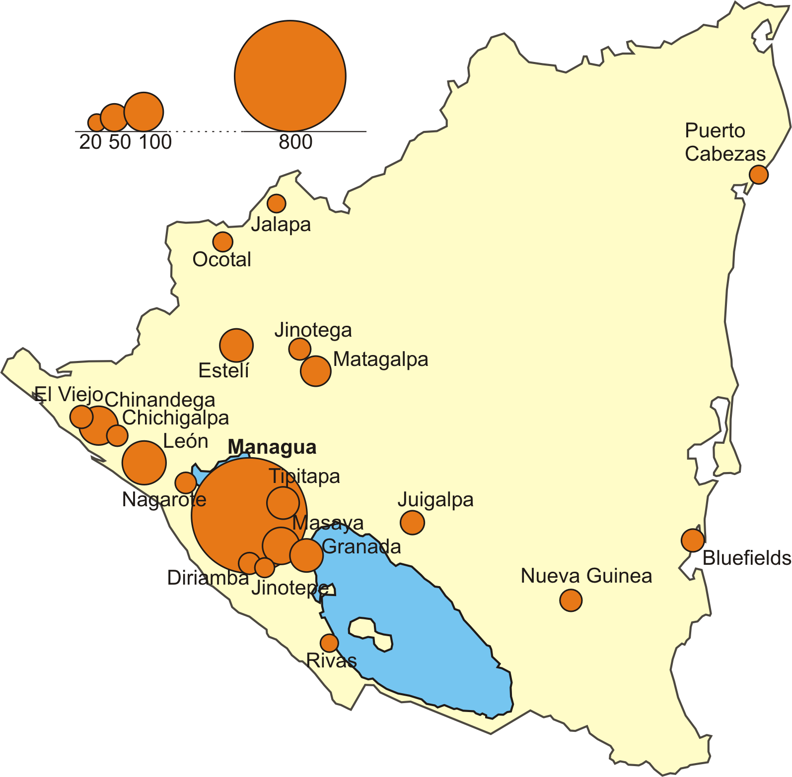
What layers do you see in this map?
Cities, water, the base country layer, and the labels, also called annotation.
There are two types of layers found on maps: raster layers and vector layers.
Raster layers are like photos: they have pixels that each have a data value inside them.
These values can be colors, but they can also be elevations, temperature, or many other data types.
Unless given some reference points, raster layers do not typically know where they are in the world.
Vector data does know where it is in the world, and stores geometries instead of pixels. This data is typically either points, lines, or polygons.
Vector data: 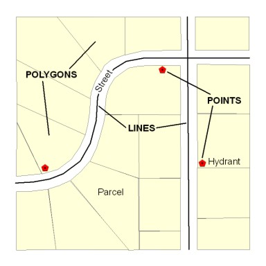
In addition to geometry, however, vector features can and mostly do include lots of other information!
Geometry is just like one of the columns in a table.
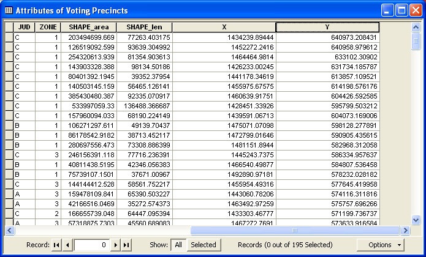
The most common vector data format you'll come across during your residency is the
shapefile.
(It's actually a misnomer: shapefiles have four separate files that contain information, but for all intents and purposes, it's one thing.)
Shapefiles were developed by Esri, the makers of
ArcGIS.
I can basically guarantee that every government GIS person you meet will know ArcGIS and will know what a shapefile is.
Shapefiles have geometry information, as well as an associated attribute table.
(We'll talk a little more about ArcGIS in a minute.)
The other major data type you're going to hear about is the feature class, which lives inside a file geodatabase.
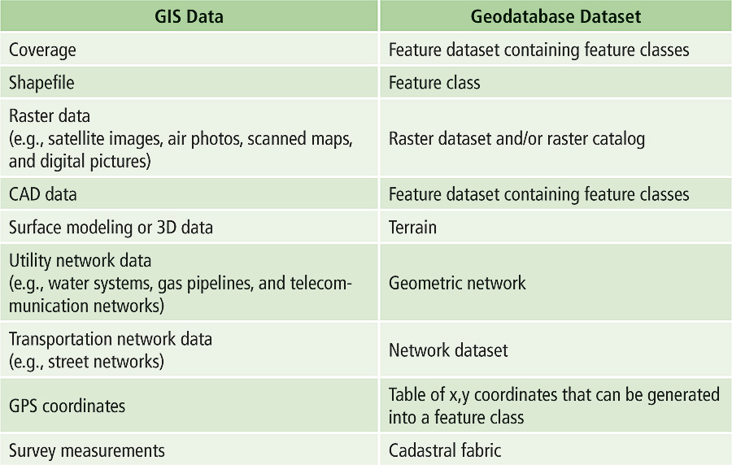
These are proprietary, closed-source formats made by Esri.
This is the new sexiness in GIS data. Shapefiles are regarded as antiquated.
However!
If you're seeking GIS data from your city, you MUST request it as a shapefile.
Shapefiles are an open format. File geodatabases and feature classes are not.
It is almost impossible to visualize, style, or do analysis on feature classes without using ArcGIS.
Ask for your data as shapefiles! It takes them two seconds and saves you a ton of time.
Other geodata formats include GeoJSON, TopoJSON, KML, and a few others that are less popular.
(You'll definitely hear more about GeoJSON later!)
So, going back. What is ArcGIS?
Actually, first, what is GIS?
GIS is an acronym for geographic information systems.
The concept was invented by
Esri back in the 1960s when they started making software.
So, again. What is ArcGIS?
ArcGIS is enterprise software for geographic data analysis and visualization.
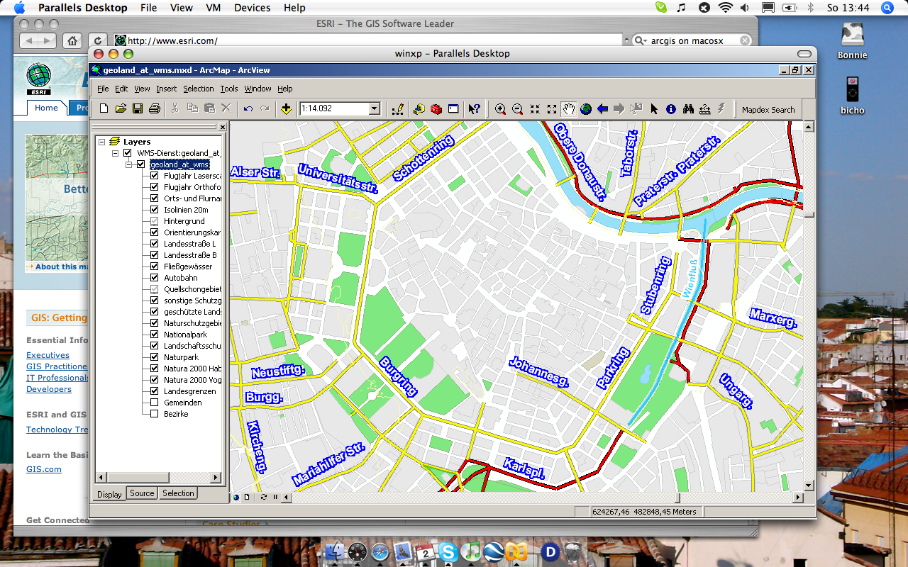
What exactly is geographic data analysis?
Also known as spatial analysis, it is the manipulation of geographic data to make new data and find patterns.
For example...
Buffers!
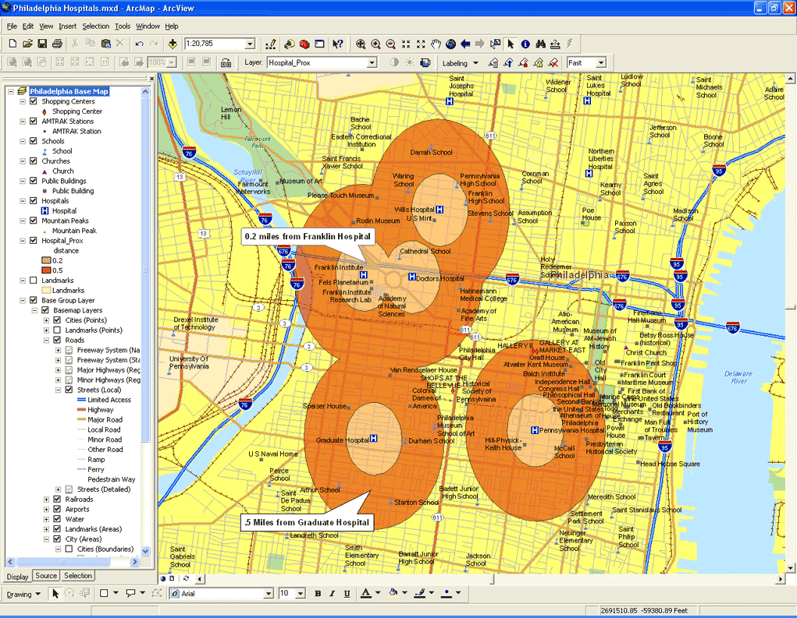
Pretty cool, right?
GIS people do this a lot, in a lot of departments, for a variety of reasons.
Even just the ability to create geographic data makes ArcGIS revolutionary in its field. It can do many things!
ArcGIS does have four fairly significant limitations.
First: it is a Windows application.
Parallels...
Second: it's really really expensive.
Seriously.
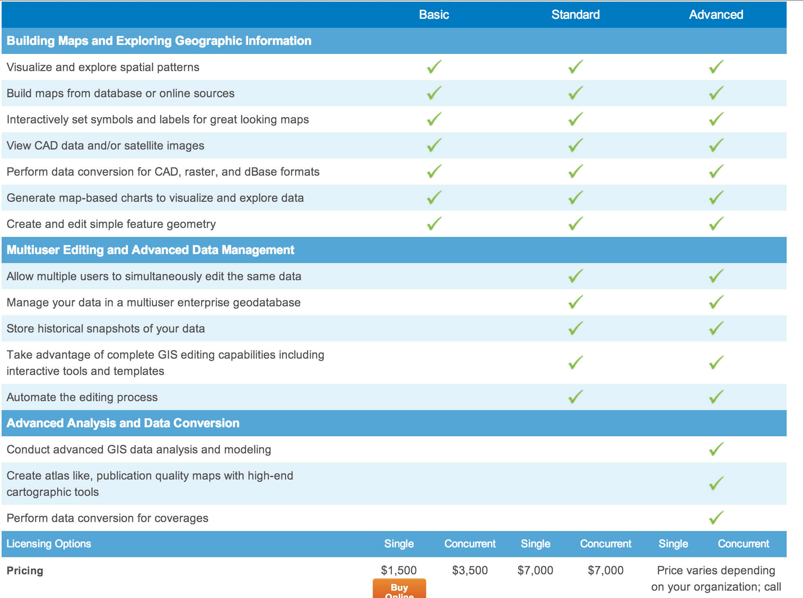
Third: it's buggy. Like, really buggy.
This is common.
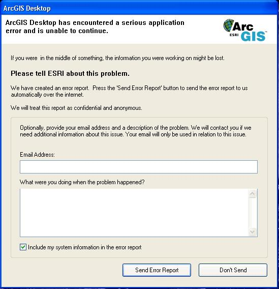
And fourth: It doesn't have great web tools.
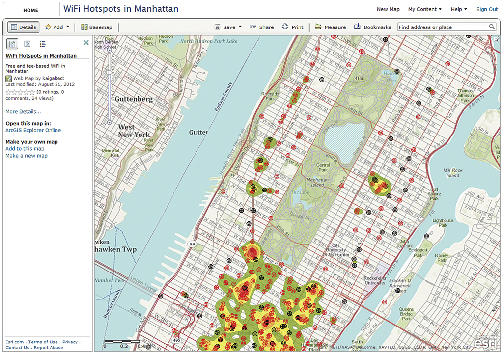
Esri recently started doing web stuff, through a portal they call
ArcGIS Online.
ArcGIS Online is a lot like the desktop software, but in the browser and with less functionality.
One great thing about it, though, is its infrastructure for cloud storage of geographic data.
(This allows folks who do not pay for ArcGIS Server to still have a repository of geographic data.)
If your city has any web maps on their site they are probably thorugh an ArcGIS viewer of some sort, with data from ArcGIS Online or ArcGIS Server.
This is what Esri's flex viewer looks like.
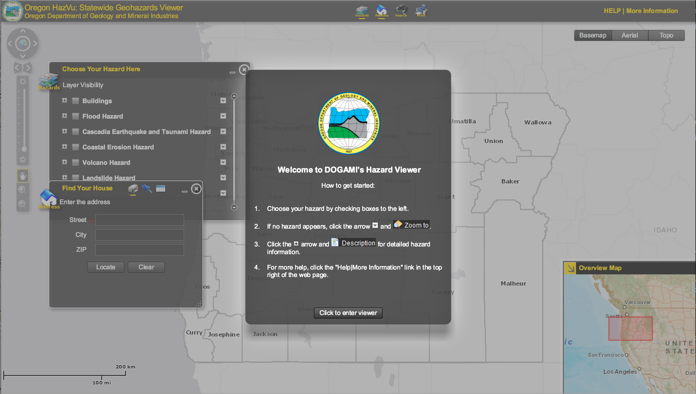
It is mostly used to access files hosted on ArcGIS Online, and it is based on a library called dojo.
(They're working on it.)
It's important to remember: ArcGIS Online is the bleeding edge of government GIS for most of the country.
If they have web maps at all, GIS people are extremely proud.
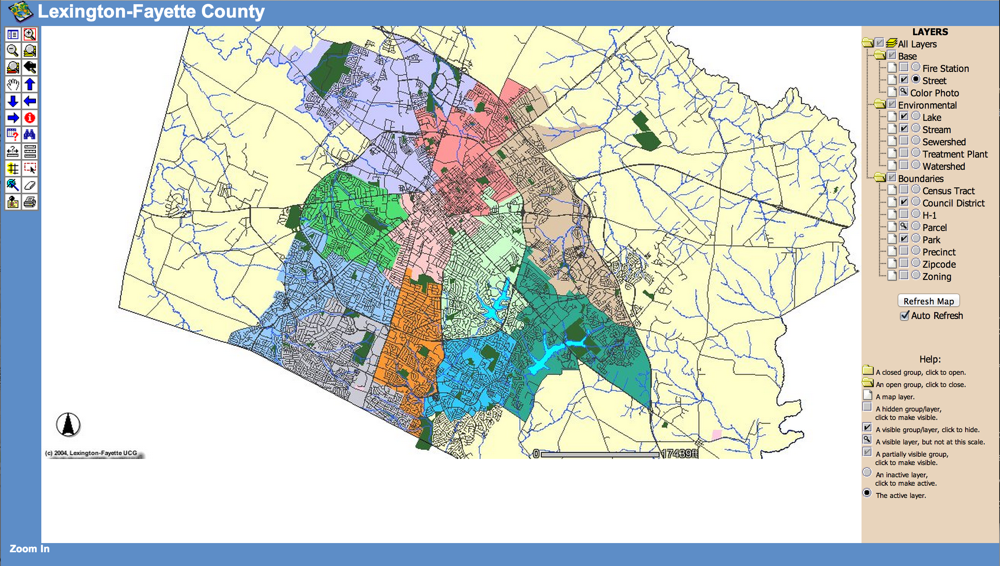
If we have enough time right now, I can talk briefly about web maps and how they work...
But if not, I'll include a conclusion here.
GIS staff spend a lot of their time defending their work to their bosses. It's very technical, which can make it hard to understand.
If you can go in knowledgeable, it'll be way easier to get data and get stuff done.
Oh, and... MAPS ARE AWESOME!
Thanks.
PS Let's talk about web maps.
First of all: What characterizes a web map?
Tiles*
*(This isn't ALWAYS the case, but we'll pretend it is for now.)
"... web maps are made up of many small, square images called tiles."
"These tiles are typically 256x256 pixels and are placed side-by-side in order to create the illusion of a very large seamless image."
You may be asking yourself: But what about when I zoom in? How come the resolution stays so good?
Well, each zoom level has its own set of tiles!
Zoom level 0: 1 tile for the world.
Zoom 0:

With each additional zoom level, the number of tiles increases exponentially.
Zoom level 1: 4 tiles for the world.
Four tiles! 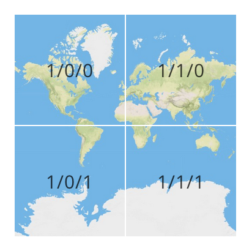
Zoom level 2: 16 tiles for the world.
Any guesses how many tiles are in zoom level 3?
Aw yeah, you got it. 64! Y'all are great at math.
Map tiles only render when you're looking at them in that moment, so tiles make maps hella fast.
Map tiles are just images on the web, so you can link to them individually.
In order to understand how this works, let's break down the URL.
http://tile.openstreetmap.org/4/2/3.png -- this is the name of the tile server.
http://tile.openstreetmap.org/4/2/3.png -- this is the z value, or the zoom level.
http://tile.openstreetmap.org/4/2/3.png -- This is the y/x value, or the place in the grid where the tile lives.
See?
What else makes a web map? Feature layers.
Feature layers are map layers that live on top of your base tiles. Sometimes you can interact with them (clicking to produce a popup, for example).
They are often vector layers (points, lines, polygons).
(Not every web map contains a feature layer, but they are fairly typical.)
What data types can we use for adding feature layers to a web map?
KML is another. So is TopoJSON. And even SVG.
Some mapping libraries allow you to define vector data points within your script itself.
But we're getting ahead of ourselves. There's one more thing that makes a web map:
It's on the web!
In order to allow you to zoom and pan and add tooltips, you need some JavaScript.
Fortunately, we have mapping libraries that can help us out!
One of them is
Leaflet, which I would love to do a training on in
March.
There's a lot more, but for now, play around with web maps.
Look at the page source, and then also inspect elements. See how they work. It's pretty cool.
I am also always available to answer questions!
Thanks (again).
lyzi@codeforamerica.org
@lyzidiamond on Twitter and GitHub.
{kind=link}